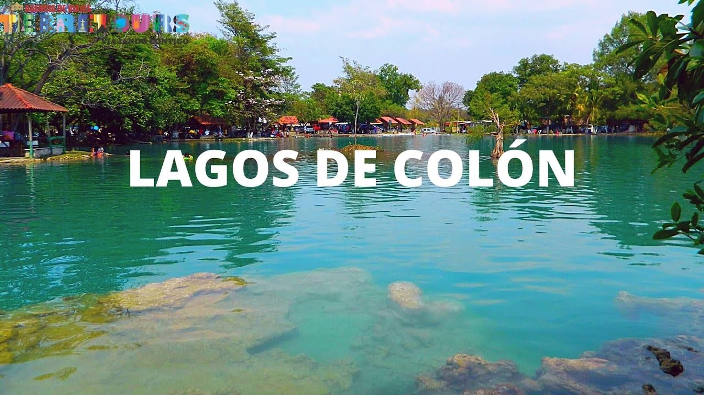
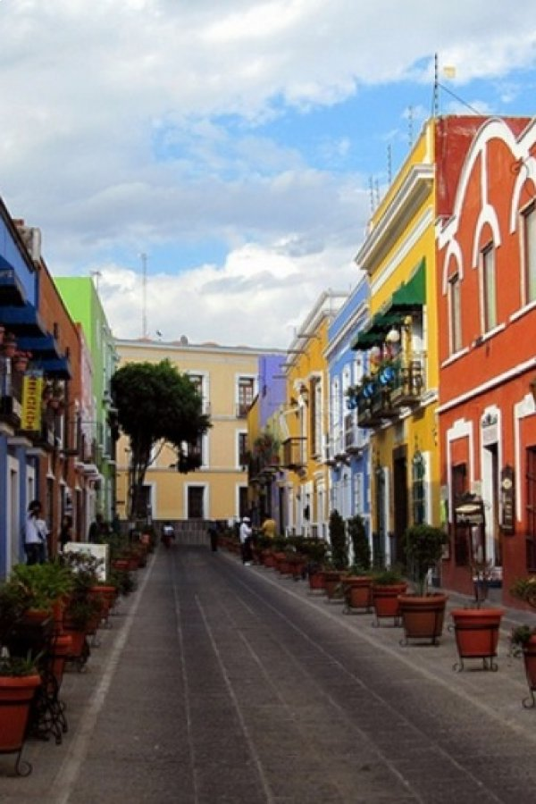
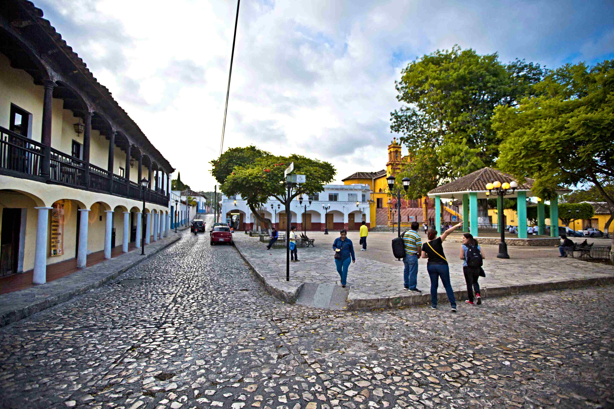
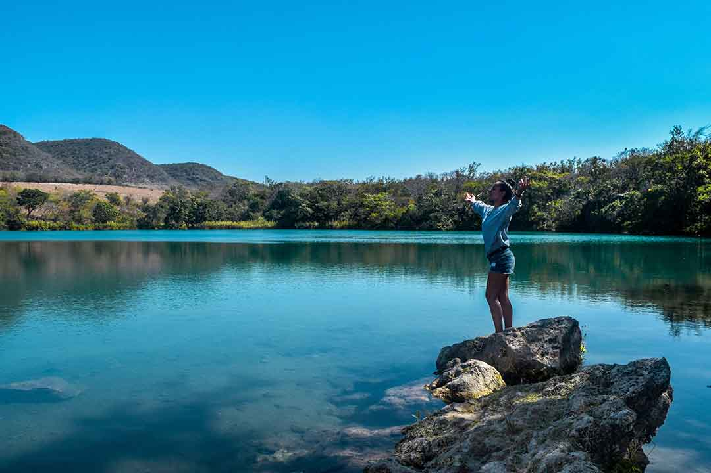
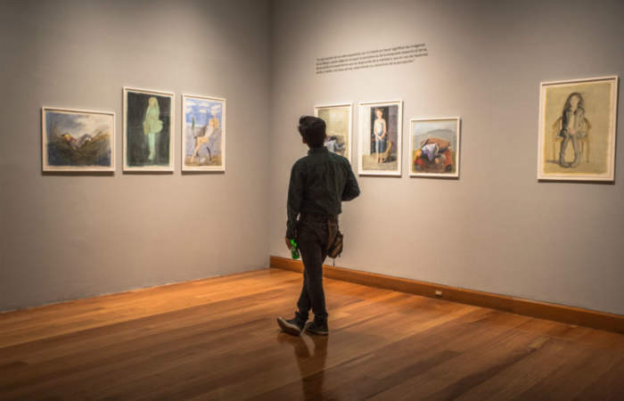
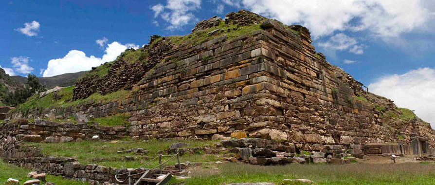
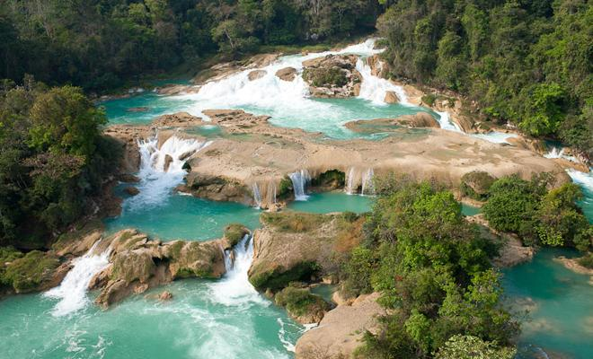
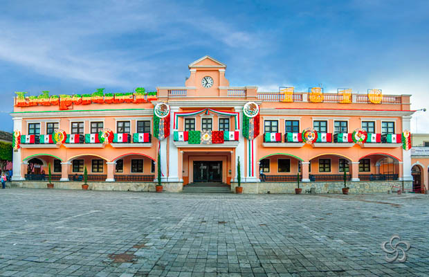
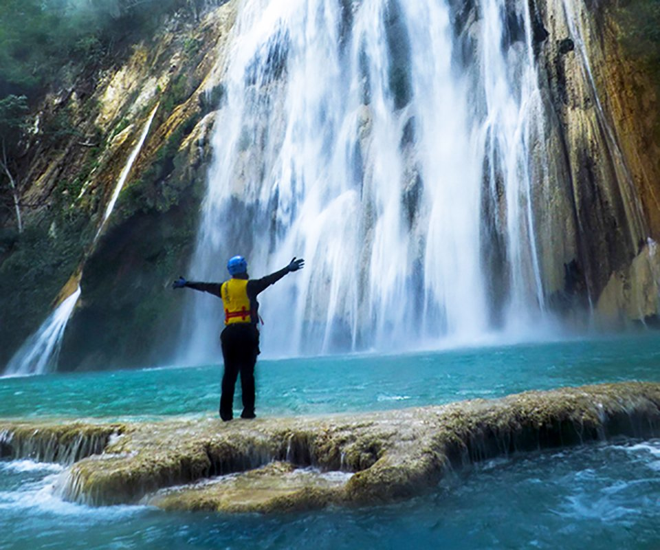

Comitán de Domínguez, Chiapas Comitán de Domínguez es sinónimo de tierra entrañable, de orgullo chiapaneco, de amabilidad lugareña y de un ámbito de paz y valiosas tradiciones. Las personas que deciden conocerlo y viajan hasta este hermoso rincón de Chiapas, se encuentran con un clima envidiable, sabores exóticos, patios llenos de flores, horizontes colmados de vegetación y rayos de sol, junto a inmemoriales vestigios de la cultura maya.
LAGOS DE COLON
KIOSKO,ZOCALO Y CALLES DEL CENTRO DE LA CIUDAD
ZONA ARQUEOLOGICA DE CHINKULTIC

ZONA ARQUEOLOGICA TENAM PUENTE

PARQUE CENTRAL DE COMITAN
LAGUNA KOILA
MUSEO ARQUEOLOGICO DE COMITAN
ZONA ARQUEOLOGICA DE JUNCHAVIN
CASCADAS LAS NUBES
PALACIO PRINCIPAL
LAS 3 TZIMOLERAS
UNINAJAB